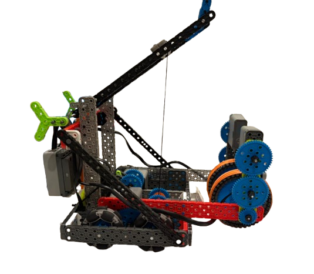
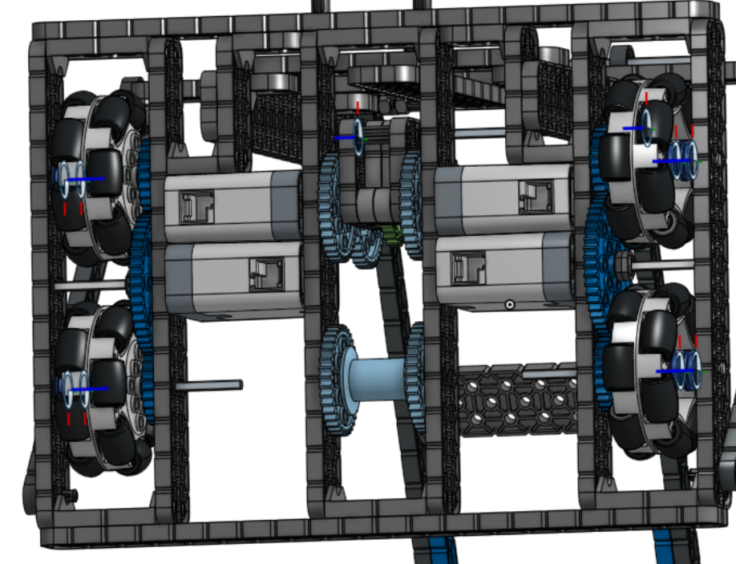
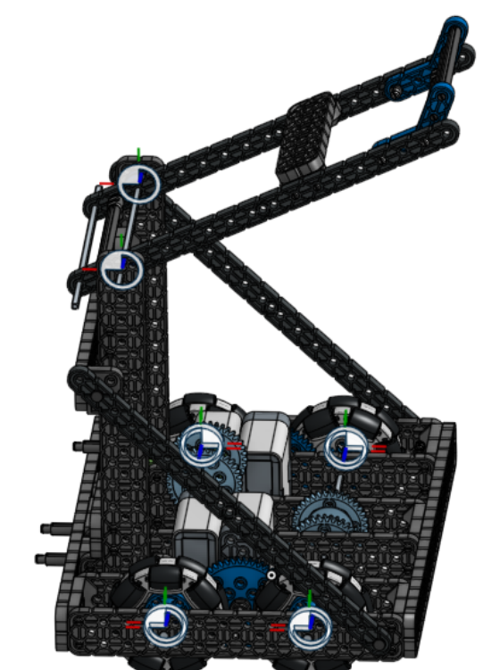
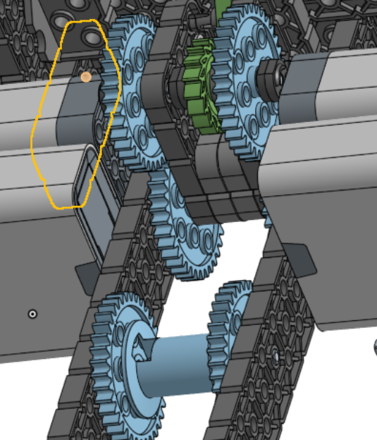
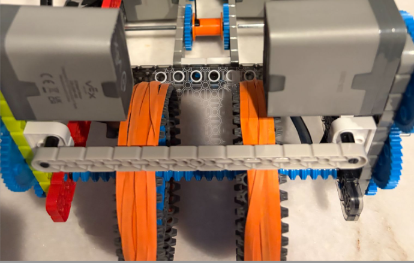

Do You What This Robot
You can access the CAD and pictures of this amazing robot by going to theroboticsconsulting.com and asking for it by pressing start now and then submitting a question. I will then personally send you the cad link and pictures.
What Is VEX IQ Level Up?
Level Up is the newest VEX IQ competition game. This season is all about being fast and transferring the bean bags quickly, due to the 1 bean bag possession limit.
In my opinion I would build a robot to get all the bean bags close to the pyramid as quickly as possible so you have to do the least amount of driving back and forth.
1. The New Meta
The top robots this season will probably focus on:
- Fast Drivetrains
- A quick way to transfer the bean bags without driving too much (catapult)
- Efficient field movement
- Long fast arm to get to the high spots and the top of the pyramid
- Strong autonomous routines
- Short robot to get under the bars
- Consistent driver control
After you get all the bean bags close to the pyramid, you need an arm to pick them up and put them on the pyramid, or like an intake so it goes in like a circle and makes it all the way up.
2. What design should YOU build
Enough yapping, let's get right into it. This is my personal opinion on what YOU should build this season.

- This is a fast 2 motor 1:2 ratio drivetrain that is small, compact, and speedy.
- The catapult uses a ratchet system, instead of the traditional choo choo mech, so that it can adjust the release angle, allowing you to score into Level 3 consistently.
- The intake uses a tank tread link wrapped around a 40 tooth sprocket to quickly and consistently intake the bean bags without any problems.
3. Drivetrain

The Drivetrain is one of the most important parts of the robot, if you don't have a strong, reliable drivetrain, your bot will drift, and just have bad build quality.
4. Catapult


The catapult is all about tuning, I found making the catapult support piece a 2x16 beam, it does not go under the bar, but it makes the shots very consistent.
5. Intake
Finally we have the intake, THE HARDEST PART in my opinion as it needs lots of tunning, even more then the catapult.

I used a 2 motor 1:2 ratio for this intake ensuring speed, while keeping power. I also used a plastic PET sheet on the bag to make sure the bean bags go into the catapult smoothly.
Get This Robot
Make Sure To Go To theroboticsconsulting.com to get this Robot for Free. Just ask!!!